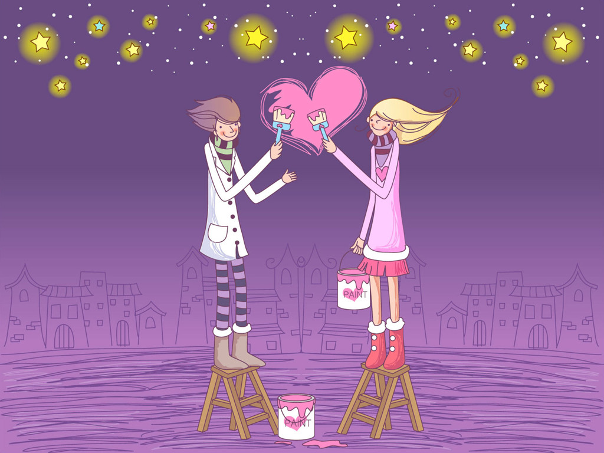

・祝您 情人节快乐！
情人节即将来临，喜鹊排成队，乌鸦排成行，老鹰来观礼，
连青蛙都来帮忙，呱呱呱呱地奏乐，祝福我们幸福安康、地久天长！
你我好比两个半圆球，拼到一起就是一个整体， 感情就是粘合剂，感情越深粘的越牢；
让我呈上一页祝福愿你平安:幸福，快乐，安康，美�M。
借情人节之约，想对你说一句：爱你直到永远。
今天我很想你,你有空出来吃饭吗?晚上老地方见.吻你. 天变、地变，我对你的情不变，上天让你我有缘相见，只想对你说一句爱你直到永远。作为礼物送给你们，祝朋友们情人节快乐!
好想朝朝暮暮，更想天长地久。思念悠悠，爱意浓浓。
你灵气，我傻气.
你秀气，我土气.
你香气，我酒气.
你生气，我受气.
一切只为你满意。
天变、地变、海变、人变，世界更是变、变、变，唯一永恒的是
我对你的情、我对你的爱、还有一颗早已为你沉醉的心。 事业上的登峰造极是我的要求,而你是我一生的所求

我把成串的往昔,多情的眷恋,在春光明媚的日子里,编织成相思的花环,献给你.
七夕 （唐）李贺
别浦今朝暗，罗帷午夜愁。
鹊辞穿线月，花入曝衣楼。
天上分金镜，人间望玉钩。
钱塘苏小小，更值一年秋。
左手刻着我，右手写着你，心中充满爱，当我们掌心相对，心心相印时，所有的人都会看到�D�D我爱你… ^_^
不要忘记传给我.
・祝你情人节快乐！
将此页发给5个最好的朋友，把最好的祝福礼物送给朋友，一周内梦想就会实现，只要发就有机会，相信自己!
有一天，你的梦想突然实现了，你别忘记把这送给你喜欢和关心的人~~ 当然也别忘了送回来给我 ^_^
我等你